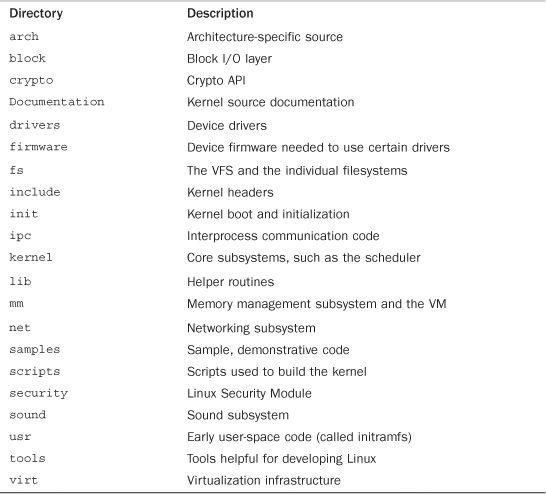

In this chapter, we introduce some of the basics of the Linux kernel: where to get its source, how to compile it, and how to install the new kernel. We then go over the differences between the kernel and user-space programs and common programming constructs used in the kernel. Although the kernel certainly is unique in many ways, at the end of the day it is little different from any other large software project.
The current Linux source code is always available in both a complete tarball (an archive created with the tar command) and an incremental patch from the official home of the Linux kernel, http://www.kernel.org.
Unless you have a specific reason to work with an older version of the Linux source, you always want the latest code. The repository at kernel.org is the place to get it, along with additional patches from a number of leading kernel developers.
Over the last couple of years, the kernel hackers, led by Linus himself, have begun using a new version control system to manage the Linux kernel source. Linus created this system, called Git, with speed in mind. Unlike traditional systems such as CVS, Git is distributed, and its usage and workflow is consequently unfamiliar to many developers. I strongly recommend using Git to download and manage the Linux kernel source.
You can use Git to obtain a copy of the latest “pushed” version of Linus’s tree:
$ git clone git://git.kernel.org/pub/scm/linux/kernel/git/torvalds/linux-2.6.git
When checked out, you can update your tree to Linus’s latest:
$ git pull
With these two commands, you can obtain and subsequently keep up to date with the official kernel tree. To commit and manage your own changes, see Chapter 20, “Patches, Hacking, and the Community.” A complete discussion of Git is outside the scope of this book; many online resources provide excellent guides.
The kernel tarball is distributed in both GNU zip (gzip) and bzip2 format. Bzip2 is the default and preferred format because it generally compresses quite a bit better than gzip. The Linux kernel tarball in bzip2 format is named linux-x.y.z.tar.bz2, where x.y.z is the version of that particular release of the kernel source. After downloading the source, uncompressing and untarring it is simple. If your tarball is compressed with bzip2, run
$ tar xvjf linux-x.y.z.tar.bz2
If it is compressed with GNU zip, run
$ tar xvzf linux-x.y.z.tar.gz
This uncompresses and untars the source to the directory linux-x.y.z. If you use git to obtain and manage the kernel source, you do not need to download the tarball. Just run the git clone command as described and git downloads and unpacks the latest source.
Where to Install and Hack on the Source
The kernel source is typically installed in
/usr/src/linux. You should not use this source tree for development because the kernel version against which your C library is compiled is often linked to this tree. Moreover, you should not require root in order to make changes to the kernel—instead, work out of your home directory and use root only to install new kernels. Even when installing a new kernel,/usr/src/linuxshould remain untouched.
Throughout the Linux kernel community, patches are the lingua franca of communication. You will distribute your code changes in patches and receive code from others as patches. Incremental patches provide an easy way to move from one kernel tree to the next. Instead of downloading each large tarball of the kernel source, you can simply apply an incremental patch to go from one version to the next. This saves everyone bandwidth and you time. To apply an incremental patch, from inside your kernel source tree, simply run
$ patch –p1 < ../patch-x.y.z
Generally, a patch to a given version of the kernel is applied against the previous version.
Generating and applying patches is discussed in much more depth in later chapters.
The kernel source tree is divided into a number of directories, most of which contain many more subdirectories. The directories in the root of the source tree, along with their descriptions, are listed in Table 2.1.
Table 2.1. Directories in the Root of the Kernel Source Tree

A number of files in the root of the source tree deserve mention. The file COPYING is the kernel license (the GNU GPL v2). CREDITS is a listing of developers with more than a trivial amount of code in the kernel. MAINTAINERS lists the names of the individuals who maintain subsystems and drivers in the kernel. Makefile is the base kernel Makefile.
Building the kernel is easy. It is surprisingly easier than compiling and installing other system-level components, such as glibc. The 2.6 kernel series introduced a new configuration and build system, which made the job even easier and is a welcome improvement over earlier releases.
Because the Linux source code is available, it follows that you can configure and custom tailor it before compiling. Indeed, it is possible to compile support into your kernel for only the specific features and drivers you want. Configuring the kernel is a required step before building it. Because the kernel offers myriad features and supports a varied basket of hardware, there is a lot to configure. Kernel configuration is controlled by configuration options, which are prefixed by CONFIG in the form CONFIG_FEATURE. For example, symmetrical multiprocessing (SMP) is controlled by the configuration option CONFIG_SMP. If this option is set, SMP is enabled; if unset, SMP is disabled. The configure options are used both to decide which files to build and to manipulate code via preprocessor directives.
Configuration options that control the build process are either Booleans or tristates. A Boolean option is either yes or no. Kernel features, such as CONFIG_PREEMPT, are usually Booleans. A tristate option is one of yes, no, or module. The module setting represents a configuration option that is set but is to be compiled as a module (that is, a separate dynamically loadable object). In the case of tristates, a yes option explicitly means to compile the code into the main kernel image and not as a module. Drivers are usually represented by tristates.
Configuration options can also be strings or integers. These options do not control the build process but instead specify values that kernel source can access as a preprocessor macro. For example, a configuration option can specify the size of a statically allocated array.
Vendor kernels, such as those provided by Canonical for Ubuntu or Red Hat for Fedora, are precompiled as part of the distribution. Such kernels typically enable a good cross section of the needed kernel features and compile nearly all the drivers as modules. This provides for a great base kernel with support for a wide range of hardware as separate modules. For better or worse, as a kernel hacker, you need to compile your own kernels and learn what modules to include on your own.
Thankfully, the kernel provides multiple tools to facilitate configuration. The simplest tool is a text-based command-line utility:
$ make config
This utility goes through each option, one by one, and asks the user to interactively select yes, no, or (for tristates) module. Because this takes a long time, unless you are paid by the hour, you should use an ncurses-based graphical utility:
$ make menuconfig
Or a gtk+-based graphical utility:
$ make gconfig
These three utilities divide the various configuration options into categories, such as “Processor Type and Features.” You can move through the categories, view the kernel options, and of course change their values.
This command creates a configuration based on the defaults for your architecture:
$ make defconfig
Although these defaults are somewhat arbitrary (on i386, they are rumored to be Linus’s configuration!), they provide a good start if you have never configured the kernel. To get off and running quickly, run this command and then go back and ensure that configuration options for your hardware are enabled.
The configuration options are stored in the root of the kernel source tree in a file named .config. You may find it easier (as most of the kernel developers do) to just edit this file directly. It is quite easy to search for and change the value of the configuration options. After making changes to your configuration file, or when using an existing configuration file on a new kernel tree, you can validate and update the configuration:
$ make oldconfig
You should always run this before building a kernel.
The configuration option CONFIG_IKCONFIG_PROC places the complete kernel configuration file, compressed, at /proc/config.gz. This makes it easy to clone your current configuration when building a new kernel. If your current kernel has this option enabled, you can copy the configuration out of /proc and use it to build a new kernel:
$ zcat /proc/config.gz > .config
$ make oldconfig
After the kernel configuration is set—however you do it—you can build it with a single command:
$ make
Unlike kernels before 2.6, you no longer need to run make dep before building the kernel—the dependency tree is maintained automatically. You also do not need to specify a specific build type, such as bzImage, or build modules separately, as you did in old versions. The default Makefile rule will handle everything.
A trick to minimize build noise, but still see warnings and errors, is to redirect the output from make:
$ make > ../detritus
If you need to see the build output, you can read the file. Because the warnings and errors are output to standard error, however, you normally do not need to. In fact, I just do
$ make > /dev/null
This redirects all the worthless output to that big, ominous sink of no return, /dev/null.
The make program provides a feature to split the build process into a number of parallel jobs. Each of these jobs then runs separately and concurrently, significantly speeding up the build process on multiprocessing systems. It also improves processor utilization because the time to build a large source tree includes significant time in I/O wait (time in which the process is idle waiting for an I/O request to complete).
By default, make spawns only a single job because Makefiles all too often have incorrect dependency information. With incorrect dependencies, multiple jobs can step on each other’s toes, resulting in errors in the build process. The kernel’s Makefiles have correct dependency information, so spawning multiple jobs does not result in failures. To build the kernel with multiple make jobs, use
$ make -jn
Here, n is the number of jobs to spawn. Usual practice is to spawn one or two jobs per processor. For example, on a 16-core machine, you might do
$ make -j32 > /dev/null
Using utilities such as the excellent distcc or ccache can also dramatically improve kernel build time.
After the kernel is built, you need to install it. How it is installed is architecture- and boot loader-dependent—consult the directions for your boot loader on where to copy the kernel image and how to set it up to boot. Always keep a known-safe kernel or two around in case your new kernel has problems!
As an example, on an x86 system using grub, you would copy arch/i386/boot/bzImage to /boot, name it something like vmlinuz-version, and edit /boot/grub/grub.conf, adding a new entry for the new kernel. Systems using LILO to boot would instead edit /etc/lilo.conf and then rerun lilo.
Installing modules, thankfully, is automated and architecture-independent. As root, simply run
% make modules_install
This installs all the compiled modules to their correct home under /lib/modules.
The build process also creates the file System.map in the root of the kernel source tree. It contains a symbol lookup table, mapping kernel symbols to their start addresses. This is used during debugging to translate memory addresses to function and variable names.
The Linux kernel has several unique attributes as compared to a normal user-space application. Although these differences do not necessarily make developing kernel code harder than developing user-space code, they certainly make doing so different.
These characteristics make the kernel a beast of a different nature. Some of the usual rules are bent; other rules are entirely new. Although some of the differences are obvious (we all know the kernel can do anything it wants), others are not so obvious. The most important of these differences are
• The kernel has access to neither the C library nor the standard C headers.
• The kernel is coded in GNU C.
• The kernel lacks the memory protection afforded to user-space.
• The kernel cannot easily execute floating-point operations.
• The kernel has a small per-process fixed-size stack.
• Because the kernel has asynchronous interrupts, is preemptive, and supports SMP, synchronization and concurrency are major concerns within the kernel.
• Portability is important.
Let’s briefly look at each of these issues because all kernel developers must keep them in mind.
Unlike a user-space application, the kernel is not linked against the standard C library—or any other library, for that matter. There are multiple reasons for this, including a chicken-and-the-egg situation, but the primary reason is speed and size. The full C library—or even a decent subset of it—is too large and too inefficient for the kernel.
Do not fret: Many of the usual libc functions are implemented inside the kernel. For example, the common string manipulation functions are in lib/string.c. Just include the header file <linux/string.h> and have at them.
Header Files
When I talk about header files in this book, I am referring to the kernel header files that are part of the kernel source tree. Kernel source files cannot include outside headers, just as they cannot use outside libraries.
The base files are located in the
include/directory in the root of the kernel source tree. For example, the header file<linux/inotify.h>is located atinclude/linux/inotify.hin the kernel source tree.A set of architecture-specific header files are located in
arch/<architecture>/include/asmin the kernel source tree. For example, if compiling for the x86 architecture, your architecture-specific headers are inarch/x86/include/asm. Source code includes these headers via just theasm/prefix, for example<asm/ioctl.h>.
Of the missing functions, the most familiar is printf(). The kernel does not have access to printf(), but it does provide printk(), which works pretty much the same as its more familiar cousin. The printk() function copies the formatted string into the kernel log buffer, which is normally read by the syslog program. Usage is similar to printf():
printk("Hello world! A string '%s' and an integer '%d'\n", str, i);
One notable difference between printf() and printk() is that printk() enables you to specify a priority flag. This flag is used by syslogd to decide where to display kernel messages. Here is an example of these priorities:
printk(KERN_ERR "this is an error!\n");
Note there is no comma between KERN_ERR and the printed message. This is intentional; the priority flag is a preprocessor-define representing a string literal, which is concatenated onto the printed message during compilation. We use printk() throughout this book.
Like any self-respecting Unix kernel, the Linux kernel is programmed in C. Perhaps surprisingly, the kernel is not programmed in strict ANSI C. Instead, where applicable, the kernel developers make use of various language extensions available in gcc (the GNU Compiler Collection, which contains the C compiler used to compile the kernel and most everything else written in C on a Linux system).
The kernel developers use both ISO C991 and GNU C extensions to the C language. These changes wed the Linux kernel to gcc, although recently one other compiler, the Intel C compiler, has sufficiently supported enough gcc features that it, too, can compile the Linux kernel. The earliest supported gcc version is 3.2; gcc version 4.4 or later is recommended. The ISO C99 extensions that the kernel uses are nothing special and, because C99 is an official revision of the C language, are slowly cropping up in a lot of other code. The more unfamiliar deviations from standard ANSI C are those provided by GNU C. Let’s look at some of the more interesting extensions that you will see in the kernel; these changes differentiate kernel code from other projects with which you might be familiar.
1
ISO C99 is the latest major revision to the ISO C standard. C99 adds numerous enhancements to the previous major revision, ISO C90, including designated initializers, variable length arrays, C++-style comments, and the long long and complex types. The Linux kernel, however, employs only a subset of C99 features.
Both C99 and GNU C support inline functions. An inline function is, as its name suggests, inserted inline into each function call site. This eliminates the overhead of function invocation and return (register saving and restore) and allows for potentially greater optimization as the compiler can optimize both the caller and the called function as one. As a downside (nothing in life is free), code size increases because the contents of the function are copied into all the callers, which increases memory consumption and instruction cache footprint. Kernel developers use inline functions for small time-critical functions. Making large functions inline, especially those used more than once or that are not exceedingly time critical, is frowned upon.
An inline function is declared when the keywords static and inline are used as part of the function definition. For example
static inline void wolf(unsigned long tail_size)
The function declaration must precede any usage, or else the compiler cannot make the function inline. Common practice is to place inline functions in header files. Because they are marked static, an exported function is not created. If an inline function is used by only one file, it can instead be placed toward the top of just that file.
In the kernel, using inline functions is preferred over complicated macros for reasons of type safety and readability.
The gcc C compiler enables the embedding of assembly instructions in otherwise normal C functions. This feature, of course, is used in only those parts of the kernel that are unique to a given system architecture.
The asm() compiler directive is used to inline assembly code. For example, this inline assembly directive executes the x86 processor’s rdtsc instruction, which returns the value of the timestamp (tsc) register:
unsigned int low, high;
asm volatile("rdtsc" : "=a" (low), "=d" (high));
/* low and high now contain the lower and upper 32-bits of the 64-bit tsc */
The Linux kernel is written in a mixture of C and assembly, with assembly relegated to low-level architecture and fast path code. The vast majority of kernel code is programmed in straight C.
The gcc C compiler has a built-in directive that optimizes conditional branches as either very likely taken or very unlikely taken. The compiler uses the directive to appropriately optimize the branch. The kernel wraps the directive in easy-to-use macros, likely() and unlikely().
For example, consider an if statement such as the following:
if (error) {
/* ... */
}
To mark this branch as very unlikely taken (that is, likely not taken):
/* we predict 'error' is nearly always zero ... */
if (unlikely(error)) {
/* ... */
}
Conversely, to mark a branch as very likely taken:
/* we predict 'success' is nearly always nonzero ... */
if (likely(success)) {
/* ... */
}
You should only use these directives when the branch direction is overwhelmingly known a priori or when you want to optimize a specific case at the cost of the other case. This is an important point: These directives result in a performance boost when the branch is correctly marked, but a performance loss when the branch is mismarked. A common usage, as shown in these examples, for unlikely() and likely() is error conditions. As you might expect, unlikely() finds much more use in the kernel because if statements tend to indicate a special case.
When a user-space application attempts an illegal memory access, the kernel can trap the error, send the SIGSEGV signal, and kill the process. If the kernel attempts an illegal memory access, however, the results are less controlled. (After all, who is going to look after the kernel?) Memory violations in the kernel result in an oops, which is a major kernel error. It should go without saying that you must not illegally access memory, such as dereferencing a NULL pointer—but within the kernel, the stakes are much higher!
Additionally, kernel memory is not pageable. Therefore, every byte of memory you consume is one less byte of available physical memory. Keep that in mind the next time you need to add one more feature to the kernel!
When a user-space process uses floating-point instructions, the kernel manages the transition from integer to floating point mode. What the kernel has to do when using floating-point instructions varies by architecture, but the kernel normally catches a trap and then initiates the transition from integer to floating point mode.
Unlike user-space, the kernel does not have the luxury of seamless support for floating point because it cannot easily trap itself. Using a floating point inside the kernel requires manually saving and restoring the floating point registers, among other possible chores. The short answer is: Don’t do it! Except in the rare cases, no floating-point operations are in the kernel.
User-space can get away with statically allocating many variables on the stack, including huge structures and thousand-element arrays. This behavior is legal because user-space has a large stack that can dynamically grow. (Developers on older, less advanced operating systems—say, DOS—might recall a time when even user-space had a fixed-sized stack.)
The kernel stack is neither large nor dynamic; it is small and fixed in size. The exact size of the kernel’s stack varies by architecture. On x86, the stack size is configurable at compile-time and can be either 4KB or 8KB. Historically, the kernel stack is two pages, which generally implies that it is 8KB on 32-bit architectures and 16KB on 64-bit architectures—this size is fixed and absolute. Each process receives its own stack.
The kernel stack is discussed in much greater detail in later chapters.
The kernel is susceptible to race conditions. Unlike a single-threaded user-space application, a number of properties of the kernel allow for concurrent access of shared resources and thus require synchronization to prevent races. Specifically
• Linux is a preemptive multitasking operating system. Processes are scheduled and rescheduled at the whim of the kernel’s process scheduler. The kernel must synchronize between these tasks.
• Linux supports symmetrical multiprocessing (SMP). Therefore, without proper protection, kernel code executing simultaneously on two or more processors can concurrently access the same resource.
• Interrupts occur asynchronously with respect to the currently executing code. Therefore, without proper protection, an interrupt can occur in the midst of accessing a resource, and the interrupt handler can then access the same resource.
• The Linux kernel is preemptive. Therefore, without protection, kernel code can be preempted in favor of different code that then accesses the same resource.
Typical solutions to race conditions include spinlocks and semaphores. Later chapters provide a thorough discussion of synchronization and concurrency.
Although user-space applications do not have to aim for portability, Linux is a portable operating system and should remain one. This means that architecture-independent C code must correctly compile and run on a wide range of systems, and that architecture-dependent code must be properly segregated in system-specific directories in the kernel source tree.
A handful of rules—such as remain endian neutral, be 64-bit clean, do not assume the word or page size, and so on—go a long way. Portability is discussed in depth in a later chapter.
To be sure, the kernel has unique qualities. It enforces its own rules and the stakes, managing the entire system as the kernel does, are certainly higher. That said, the Linux kernel’s complexity and barrier-to-entry is not qualitatively different from any other large software project. The most important step on the road to Linux development is the realization that the kernel is not something to fear. Unfamiliar, sure. Insurmountable? Not at all.
This and the previous chapter lay the foundation for the topics we cover through this book’s remaining chapters. In each subsequent chapter, we cover a specific kernel concept or subsystem. Along the way, it is imperative that you read and modify the kernel source. Only through actually reading and experimenting with the code can you ever understand it. The source is freely available—use it!